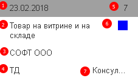

Задачи могут перетаскиваться из одного столбца в другой по мере необходимости. В случае, когда задача перетаскивается в столбец «В работе», то система включает счетчик по задаче.

1. Срок задачи;
2. Название задачи;
3. Заказчик;
4. Проект;
5. Приоритет;
6. Цвет приоритета;
7. Исполнитель.
На форме в панели анализа размещены диаграммы:
Все диаграммы показывают информацию по отобранному исполнителю. Если исполнитель не выбран, то показываются по всем исполнителям.
Для контактных лиц клиентов показывается только одна диаграмма «Реализовано за месяц». Диаграмма показывает в разрезе проектов заказчика количество часов к оплате по всем задачам в статусах «Подтверждение» и «Завершена» за текущий месяц.
В каждом из списков задач в контекстном меню (при нажатии правой кнопки мыши) есть кнопки, которые могут изменить статус задачи, не открывая ее. В колонках - показаны задачи по статусам, переход из статуса в статус осуществляется путем перетаскивания.
Список отложенных задач:
Список завершенных сегодня задач:
Задачи переносятся в него перетаскиванием или установкой статуса "Завершен". По нажатию на ссылку откроется окно, со списком всех завершенных задач.
К любой задаче можно прикрепить файлы.
Для расчета используются следующие данные задач: срок, часов к оплате (далее оценка), приоритет, и признак того, что задача уже была в работе.
Параметры для определения порядка выполнения задач:
1. Важность - определяется по приоритету, чем ниже приоритет, тем важнее задача.
2. Срочность - определяется по количеству дней до срока минус количество дней, которое потребуется на выполнение данной задачи.
3. Сложность - задача считается сложной, если оценка задачи больше, чем количество часов в одном рабочем дне исполнителя.
4. Продолжение - задача считается продолжением, если она ранее уже была в статусе "В работе".
Для определения последовательности используется бальная система. Каждому параметру назначается количество баллов, затем все баллы суммируются. У какой задачи баллов ниже, у той и приоритет выше.
Для параметра "Важность" количество баллов определяется по значению приоритета от 1 до 9.
Для параметра "Срочность" количеством баллов является количество дней до срока от текущего дня минус количество дней на решение задачи (определяется по оценке задачи).
Для параметра "Сложность" если оценка меньше количества часов в рабочем дне исполнителя, то -1 бал, иначе 0.
Для параметра "Продолжение" -1 бал, если задача уже ранее решалась, иначе 0.
Если у задач количество баллов совпадает, то порядок определяется по следующей сортировке: минимальный срок, минимальный приоритет, минимальное количество часов в оценке, признак работы по задаче ранее.
Текущий день 02.03.2018, в рабочем дне исполнителя 8 часов. Описание параметров задач {приоритет, срок, оценка, уже решалась}):
Порядок выполнения задач: 5, 4, 3, 2, 1.
Текущий день 02.03.2018, в рабочем дне исполнителя 8 часов. Описание параметров задач {приоритет, срок, оценка, уже решалась}):
Порядок выполнения задач: 7, 6, 5, 4, 2, 3, 1.